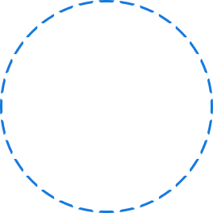

O que são IAs generativas?
Uma inteligência artificial generativa é uma tecnologia que aprende padrões complexos de comportamento usando redes adversárias generativas (GAN).

Como as IAs generativas funcionam?
IA generativa usa aprendizado de máquina para criar informações originais e realistas, como imagens ou texto, baseadas em dados de treinamento